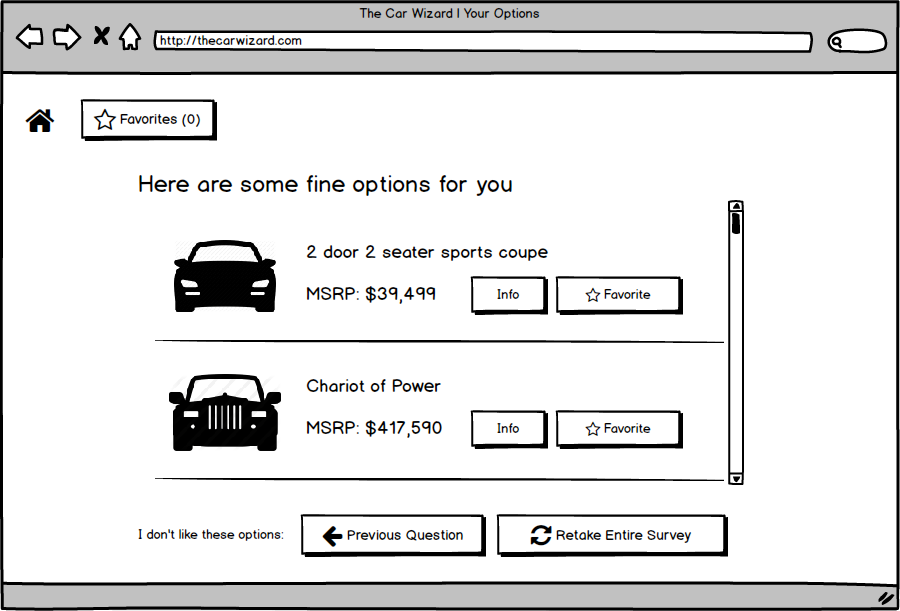

The Car Wizard
Summary
Through answering a series of gradually narrowing questions, The Car Wizard gets to know the user's needs, desires, and aspirations, and provides a very short list of cars that would be perfect for them. Thus eliminating the burden of a manual search across all possible makes and models while preserving a user's right to choose.
Design Process
- Data Gathering
- Data Analysis
- Ideation
- Prototyping
- Testing
Data Gathering
Led by me, my team conducted several semi-structured interviews with people who had recently purchased cars that they found via the internet to learn about what their experiences were. We also conducted direct observations with people who were actively looking to purchase a car to find out how they conducted the task.
Data Analysis
Affinity Diagram
Creating an affinity diagram revealed different aspects of things people think about when car shopping such as convenience and safety features, reviews, pricing data, emotional choices...
Empathy Map
"Emotionally grueling" is how I remember the process of empathy mapping. Saying the words, "I don't know where to start," "I feel helpless," and others like it centered us and quickened our resolve to find a soothing solution.
Our analysis revealed general themes of
- helplessness (from having to do the search by themselves)
- fear (of making the wrong choice due the sheer number of options available)
- distrust (dealerships are out to get them)
To have an even firmer grasp of these feelings, we created personas to distinctly embody them and give the team a human focus of this tragedy.
Persona
Sergey Ivanovich Burov
Sergey is new to the US. He is a masters student from Toulouse, France and has only been in the states for a little over a month. He has heard of how brutal Indianapolis winters can be, and although the cold doesn't bother him, he's concerned he might be bothering his friends when he asks them for rides to the store.
Sergey wants to be able to explore the city and venture into the countryside to enjoy the imminent fall festivals. He also wants to be able to give rides to some other friends who may need to get around.
While he was in Toulouse before moving to Indy, Sergey owned a Ford Fiesta and really enjoyed driving it around, he also feels that it brought him good luck. So far, Sergey hasn't had much good luck finding a car in Indy. He has a hard maximum on his budget and is looking to get a small car that he can easily park in the city. He would rather not deal with dealerships and is very wary of classified ads.
He has tried buying directly from manufacturer's websites, but found out that in Indiana, direct sales from manufacturers to consumers are forbidden by law. Sergey needs a stress free way to get into a nice hatchback before the cold winds of winter blow down from the North.
Ideation
Of the many ideas we generated through brainstorming, we picked the ones that guided users, quickly honed in on suitable options, and were reassuring to users. The fusion of those qualities is the essence of The Car Wizard.
Playing with Paper
Building a paper prototype to test out our idea was a fun learning experience which allowed us to think through each step that a potential user would take and to focus on making sure that the affordances that our product had were clearly indicated. The Paper Prototype tested with users
Ease the user in
Get to know them
Show them our recommendations
Finding out more info
I like it. Where can I buy it?
The Paper Prototype tested with users
Testing
Cognitive Walkthroughs of representative tasks and think-alouds with users informed us that the concept for The Car Wizard is solid and usable, but its success would lie with how pertinent the questions it asks are. Essentially, the design is good, but its content, which we did not tackle, would decide whether it would succeed or not.
Check out some of my other projects

MINDSpeed
Building a system to easily order healthy food and get rewards

Sharendipity
Enabling serendipitous connections between people in close proximity who share interests

IUSOC VMS
Improving and easing the process of signing up volunteers

Open Journals
Discovering what's important and reimagining a better experience for academic journal editors
Back to Projects To Top